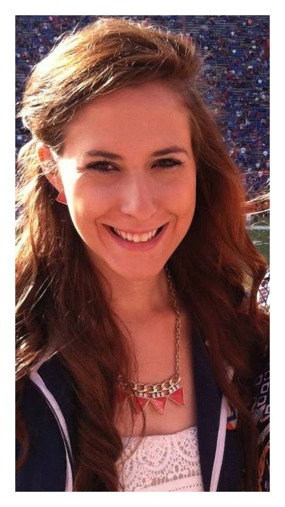

 My name is Christina Hunt and I am a second year Journalism major, Business minor at the University of Florida. I am also a sister in the Alpha Nu chapter of Phi Mu Fraternity and Senior Editor of UF Honors' online magazine, Prism. I grew up as an only child in a small town just north of Tampa. After graduation I hope to work in the communications department of a company or to manage a publication.